Licensed & Fully Insured
Professional protection and accountable workmanship on every residential and commercial drainage project.
Outdoor Drainage Specialists
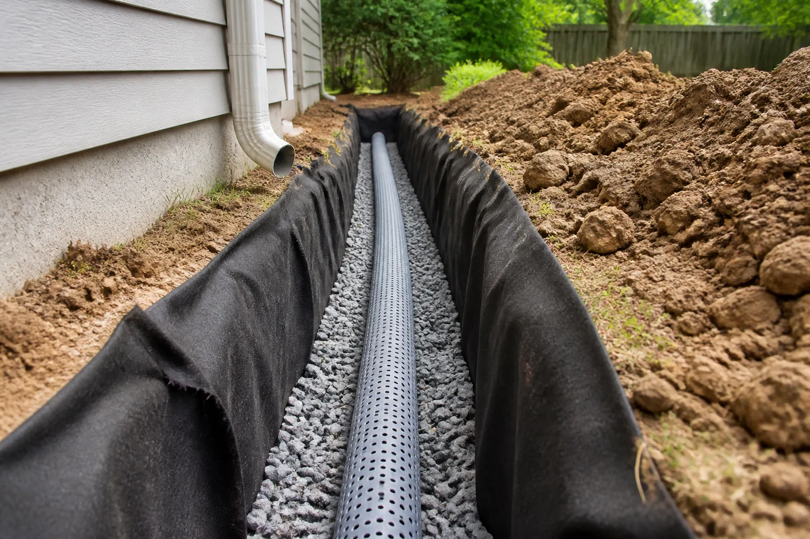
Built for Oklahoma Weather
TC French Drain Tulsa is a locally owned and operated outdoor drainage contractor serving Tulsa and the surrounding Green Country communities. With 25+ years of experience, we build French drains, yard drainage, and storm pipe systems made for Oklahoma's heavy rains and stubborn clay soils.
We're licensed, insured, and committed to honest assessments and lasting fixes. From the first phone call through final cleanup, our crew treats your property with care, keeps you informed, and stands behind the work with a 100% satisfaction guarantee.
One Call Handles Every Drainage Problem
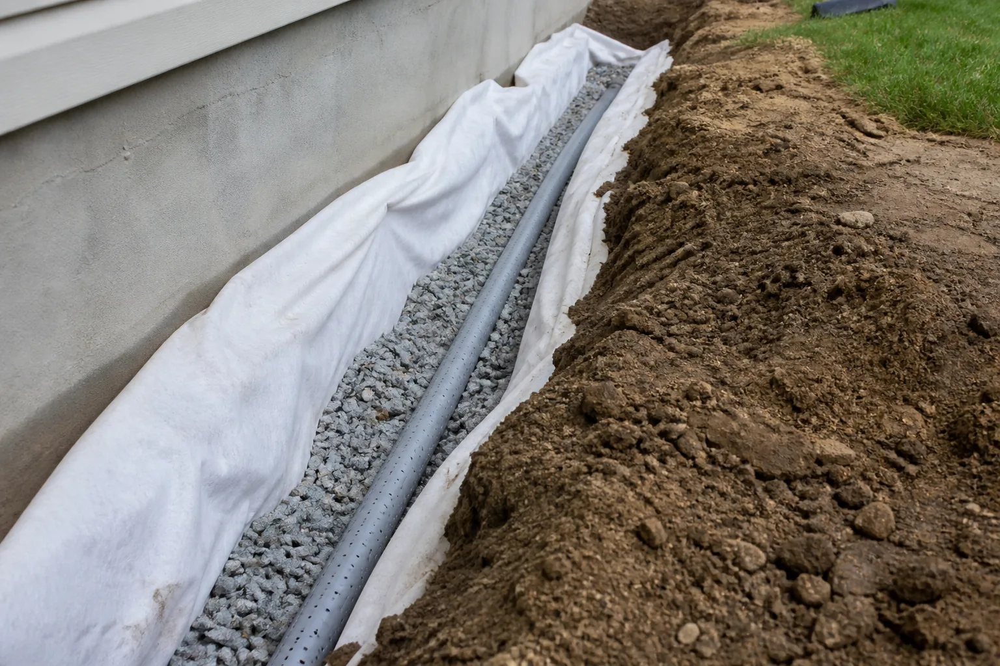
Perimeter foundation drainage installed outside the home to relieve hydrostatic pressure and stop basement or crawl-space seepage at the source.
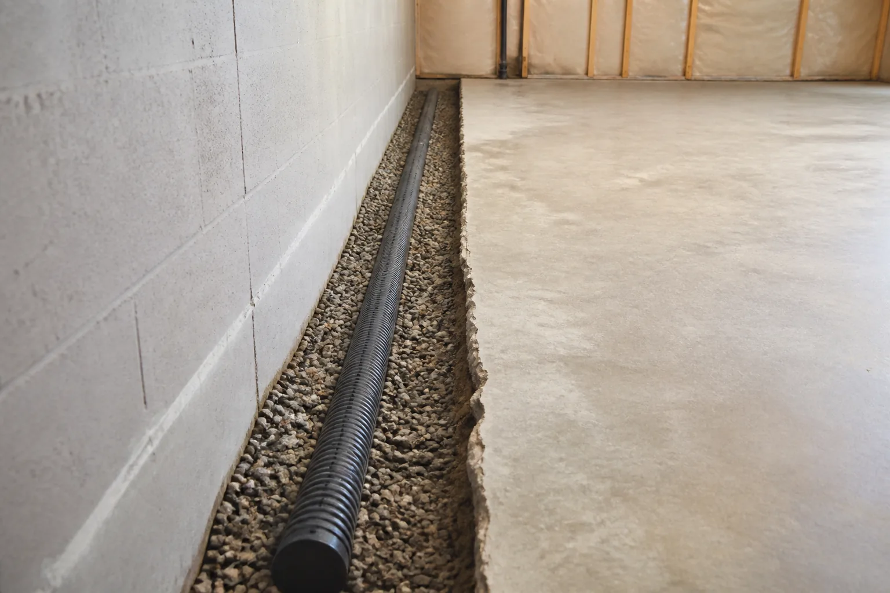
Interior drain tile installed beneath the slab to capture water before it enters your basement or living space.
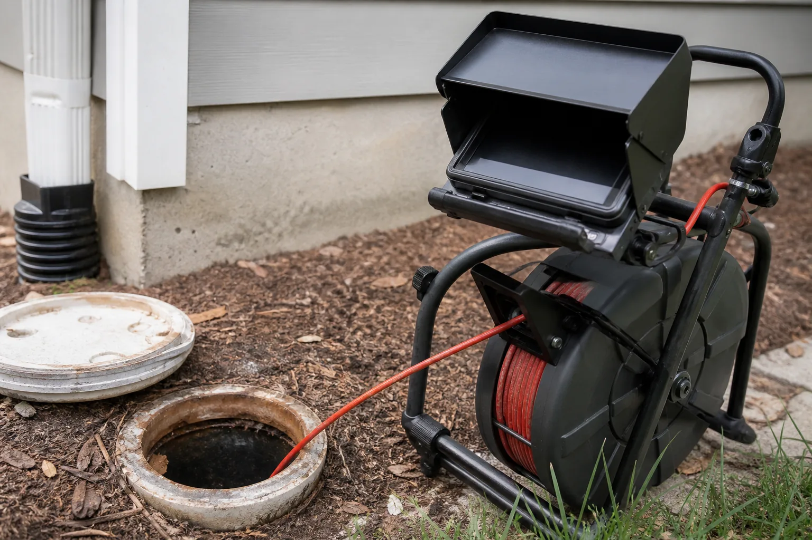
Professional camera inspections pinpoint clogs, breaks, and infiltration in drainage and sewer lines.
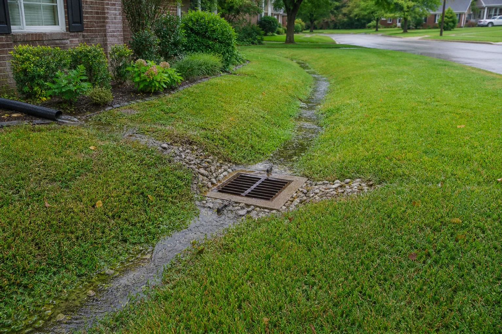
Engineered solutions for soggy lawns, standing water, and erosion across the entire property.
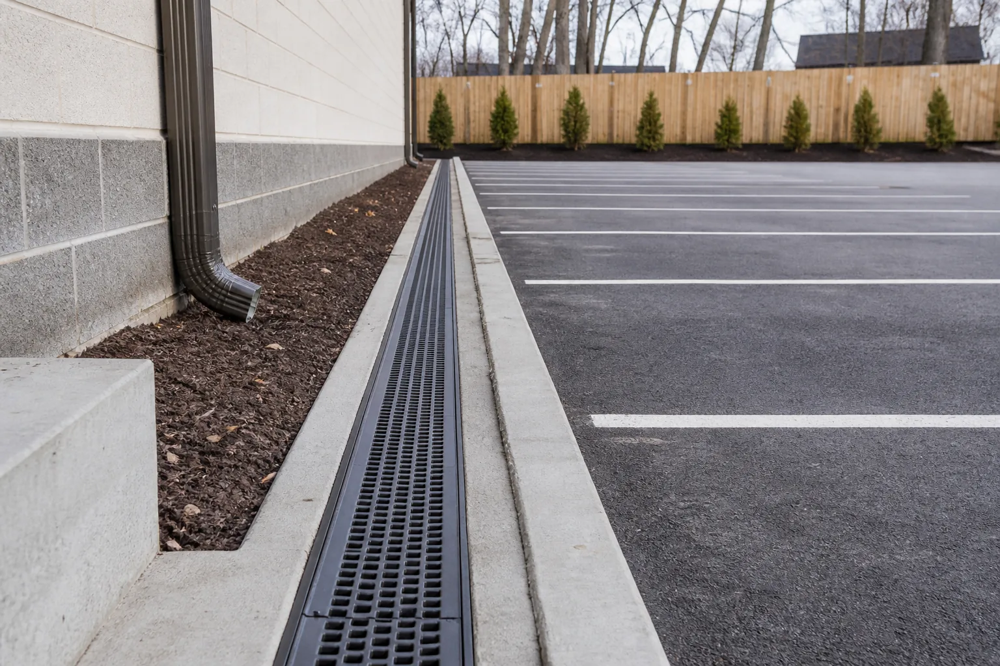
Heavy-duty drainage systems for commercial buildings, parking lots, and multi-family properties.
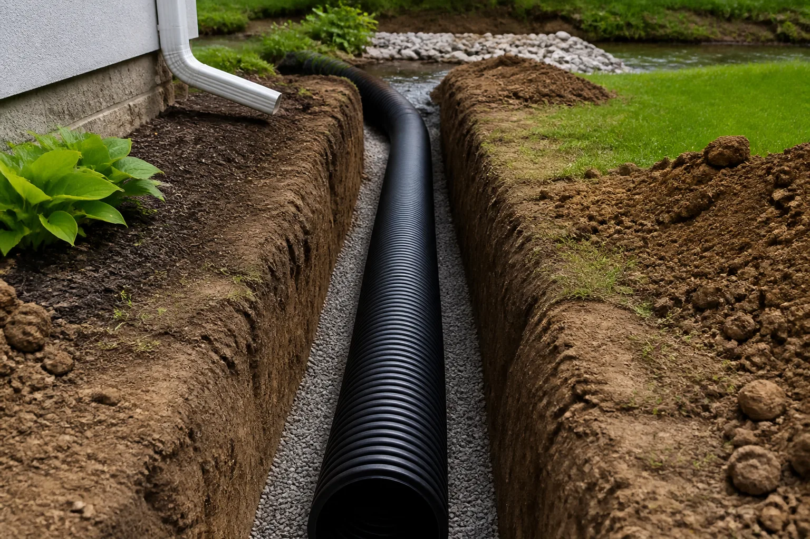
Underground storm pipe runs carry roof, gutter, and yard water safely to a responsible discharge point.
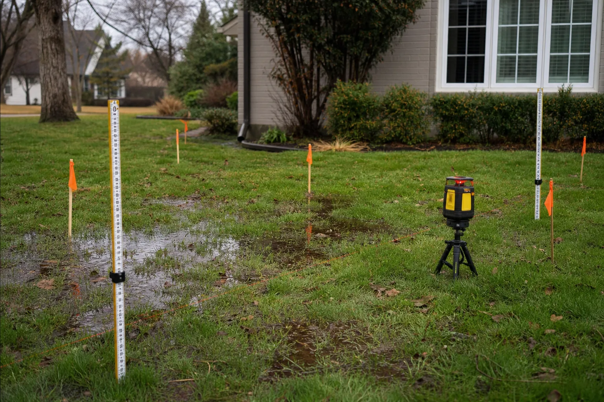
Detailed on-site evaluations identify grade, flow paths, and the true source of your water problem before work begins.
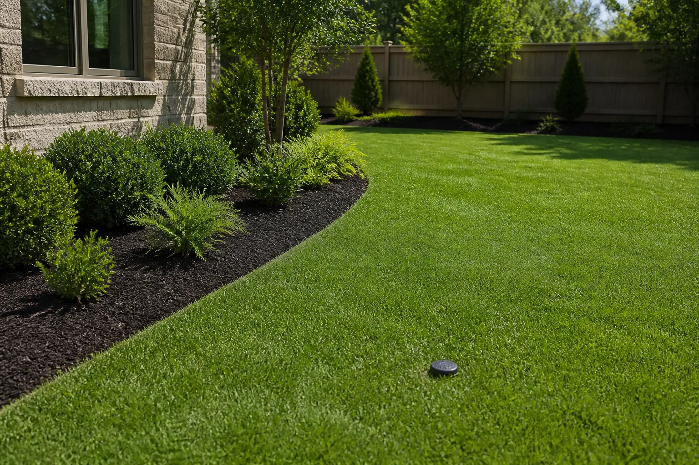
Neat cleanup, replaced sod, and careful landscape restoration are included so your property is left ready to enjoy.
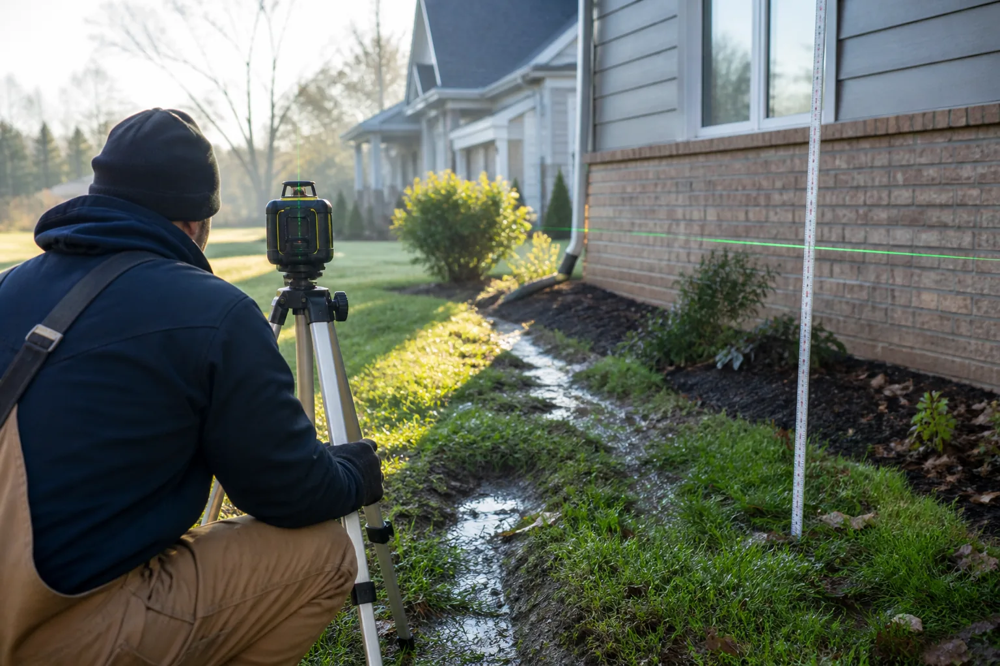
Clear Advice. Lasting Fixes.
Tell us what you're seeing and we'll inspect the property, evaluate drainage patterns, and identify the cause of the water problem.
We recommend the right fix—not the most expensive one—and provide a clear estimate with the proposed route, materials, and scope.
Our in-house crew installs the system, restores disturbed sod and landscaping, and reviews the finished work with you.
Professional protection and accountable workmanship on every residential and commercial drainage project.
Your project is handled by a crew trained specifically in French drain and storm pipe installation—not subcontractors.
Honest assessments, clear estimates, careful property restoration, and a 100% satisfaction guarantee.
Solve Water Problems at the Source
Drainage problems in the Tulsa area are common—and often get ignored until they become expensive. A properly engineered French drain intercepts groundwater and routes it safely away from your property.
Whether you're dealing with foundation seepage, standing water in the yard, or erosion after heavy rain, we'll diagnose the cause and recommend a system that fits the property.
Affordable, adaptable, efficient, and low maintenance—gravity does the work, with no moving parts or energy use.
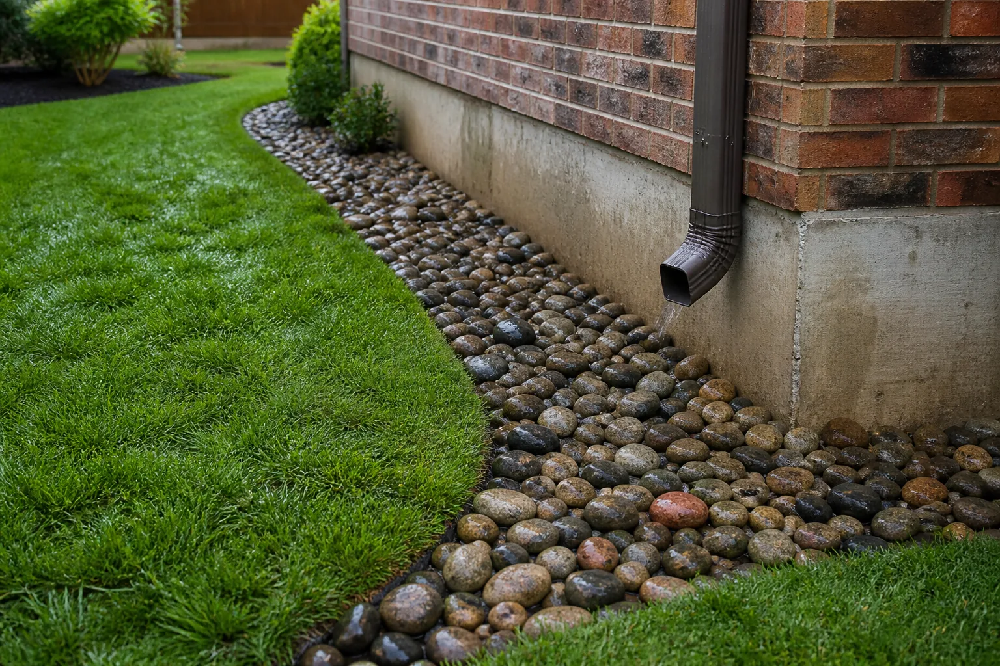
Get a Callback Within One Business Hour
Tell us about your drainage problem and we'll get back to you fast. Prefer to talk now? We answer the phone.
Request My EstimateDrainage Systems That Belong in the Landscape
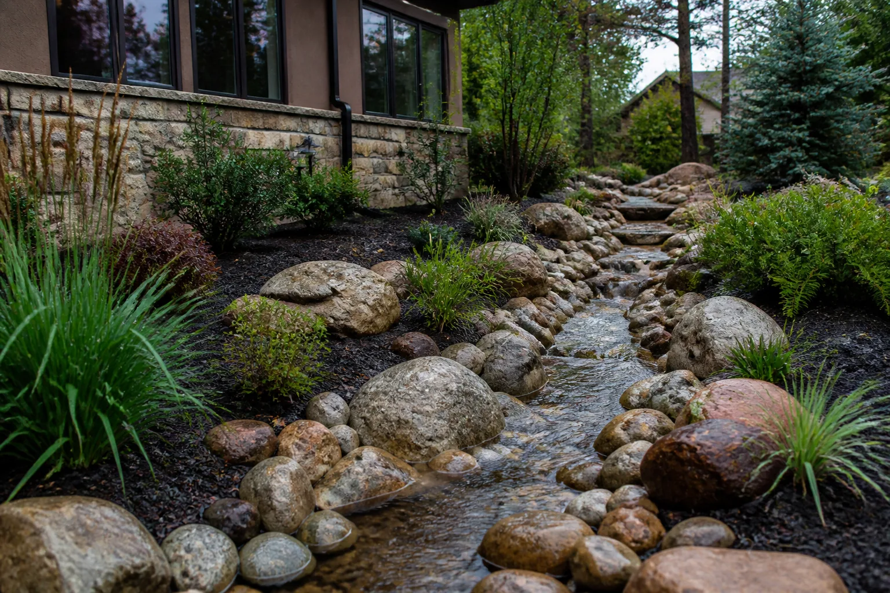
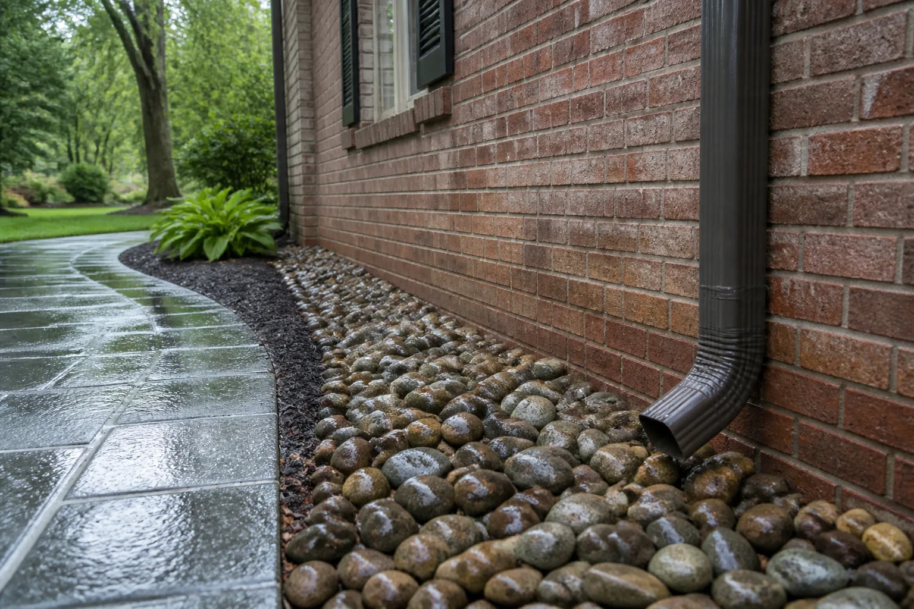
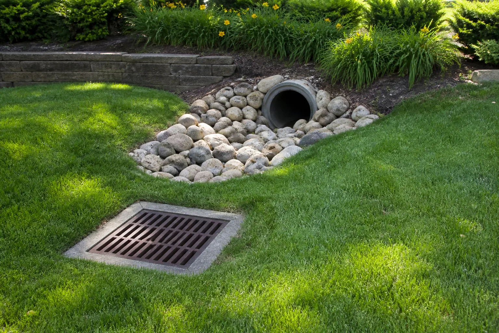
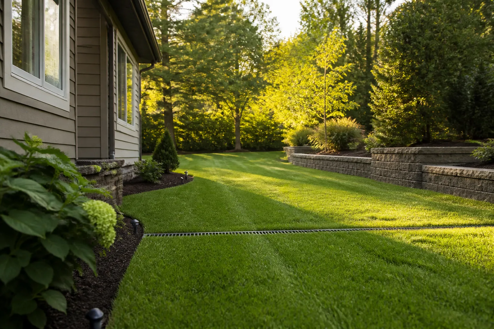
Representative drainage imagery created for this prototype; not customer project documentation.
Proudly Serving Green Country
Free, No-Obligation Estimate
Tell us what happens when it rains and where water collects. We'll respond quickly and help you determine the right next step.
Licensed and insured. Free on-site assessment. Satisfaction guaranteed.
Serving
Tulsa, OK & Green Country
Prefer to talk now?